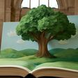
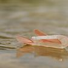
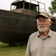
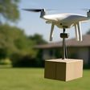
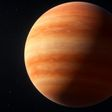
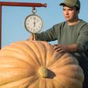
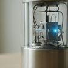
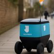
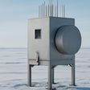
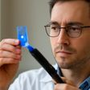

영어 지문
매일 아침 새로 올라오는 B1~B2 영어 읽기예요.
이번 주 단어 복습→2026년 11월
2026년 10월
2026년 10월 31일 토요일일상과 문화거대한 카트리나
2026년 10월 30일 금요일과학유성의 일생
2026년 10월 29일 목요일미래휴머노이드 공장
 2026년 10월 11일 일요일미래수직 농장
2026년 10월 10일 토요일일상과 문화아트 페어
2026년 10월 11일 일요일미래수직 농장
2026년 10월 10일 토요일일상과 문화아트 페어
 2026년 10월 9일 금요일과학드라코니드
2026년 10월 9일 금요일과학드라코니드

2026년 10월 28일 수요일사회거대한 팝업북
2026년 10월 27일 화요일기술근육 로봇 2026년 10월 26일 월요일과학새 공룡 화석 2026년 10월 25일 일요일우주포보스 탐사
2026년 10월 24일 토요일일상과 문화마당의 배 2026년 10월 23일 금요일과학태양 폭풍
2026년 10월 22일 목요일미래드론 배송 2026년 10월 21일 수요일사회백세 잔치 2026년 10월 20일 화요일기술눈 깜빡임 안경 2026년 10월 19일 월요일과학쏙독새 날개
2026년 10월 18일 일요일우주부푼 행성
2026년 10월 17일 토요일일상과 문화호박 무게 대회 2026년 10월 16일 금요일과학문어의 뇌 2026년 10월 15일 목요일미래로보택시 2026년 10월 14일 수요일사회나무 입양 2026년 10월 13일 화요일기술레이저 안테나
2026년 10월 12일 월요일과학핵시계2026년 10월 11일 일요일미래수직 농장
2026년 10월 10일 토요일일상과 문화아트 페어
2026년 10월 9일 금요일과학드라코니드

2026년 10월 8일 목요일미래배달 로봇 2026년 10월 7일 수요일사회야생동물 사진
2026년 10월 6일 화요일기술중성미자
2026년 10월 5일 월요일과학광유전학 2026년 10월 4일 일요일우주로만 망원경 2026년 10월 3일 토요일기술노이즈 캔슬링찾는 지문이 없어요.
매일 아침 영어 지문 받기
새 영어 지문이 올라오면 아침에 메일로 보내 드려요.
이미 구독 중이어도 같은 이메일로 다시 구독하면 수준과 언어가 바로 바뀌어요. 이메일 주소 하나로는 한 언어만 받을 수 있어요.
구독하면 영문 확인 메일(Confirm your subscription)이 가요. 메일 속 버튼을 눌러야 구독이 끝나요. 메일이 안 보이면 스팸함도 확인해 주세요.
이메일은 뉴스레터 발송에만 쓰이고, 언제든 메일 하단에서 수신거부할 수 있어요.